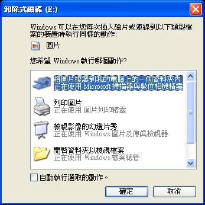

避免隨身碟病毒，只需 1 招

「為什麼安裝了防毒軟體還是會中隨身碟病毒？」
「網路上有很多避免隨身碟病毒的方法，真的有效嗎？」
「網友推薦多套防隨身碟病毒的軟體，哪一套最好用？」
在討論上述疑問之前，有必要先說明隨身碟常見的誤解。隨身碟正式的全名為「可攜式儲存設備」(Removable storage device)，
包含姆指碟、行動硬碟、記憶卡 (如 SD、CF 卡)、數位相機、數位 MP3 播放器、數位行動電話等設備。
所以並不是只有姆指碟是隨身碟，以上這些設備也都有感染隨身碟病毒的風險。
隨身碟病毒利用隨身碟攜帶方便的特性，交互感染受害電腦，以竊取敏感資料，影響範圍包含信用卡資料 [註1]、遊戲帳號與密碼 [註2] 或其它重要資訊等。從近年來的資訊安全新聞中發現，雖然防毒軟體的技術不斷進步，但是更新速率仍然不及日新月益的變種與新型態的病毒，這使得防毒軟體的偵測率趕不上病毒的演化。
筆者整理了近年隨身碟病毒重大新聞如下：
- 2006 年 10 月，防毒軟體廠商 F-Secure 發布日本麥當勞出廠 1 萬台含有隨身碟病毒的 MP3 播放器的新聞 [註3]。
- 2007 年 3 月，資訊安全網站 Zone-H 發布隨身碟病毒再度流行的警訊 [註4]。
- 2007 年 5 月，防毒軟體廠商 Sophos 發布隨身碟病毒嚴重肆虐的新聞 [註5]。
- 2007 年 11 月，Business Journal 發布隨身碟病毒對企業機密檔案的潛藏風險報告 [註6]。
當防毒軟體不再能夠保證電腦安全時，網路上紛紛出現專門處理隨身碟病毒的錦囊與軟體。然而這些錦囊是否有效？或這些軟體之中，哪種最好？接下來會與讀者一起驗證錦囊，並於最後推薦開放源碼的隨身碟防毒軟體－ Wow! 隨身碟防毒系列，只需此招便可讓電腦遠離隨身碟病毒。
◎ 破解網路流傳的防毒錦囊
錦囊一：建立 Autorun.inf 的唯讀資料夾
隨身碟病毒的感染與 Autorun.inf 檔案的內容有關。於是有人建議在隨身碟內建立 Autorun.inf 的唯讀資料夾，則可避免隨身碟感染病毒。
這個方法目前適用於大多數的隨身碟病毒，而且成效不錯。但是若往後的病毒有解除唯讀並刪除資料夾的能力，則這個方法則完全失去了保護作用。
錦囊二：使用機碼 (Registry) 啟動隨身碟的唯讀功能
作業系統可以設定隨身碟為唯讀。網路上建議在 HKEY_LOCAL_MACHINE\System\CurrentControlSet\Control\StorageDevicePolicies 下，新建 DWORD 值為 1 的 WriteProtect 機碼，則作業系統可以避免隨身碟病毒的感染。
這個機碼的目的是禁止作業系統對隨身碟的寫入權限，讓隨身碟只可讀取而不可寫入。然而感染病毒只需擁有讀取權限即可，不需寫入權限，所以即使作業系統啟用此項設定，也不能避免隨身碟病毒。
可以動手試試簡易的測試步驟，如下：
1. 在作業系統上設定 WriteProtect 且值為 1 的機碼。
2. 重新啟動電腦，使第一步驟生效。
3. 將 TEST_WowUSBProtector [註7]測試病毒解壓縮至隨身碟第一層路徑內。
4. 重新插入隨身碟。
5. 開啟桌面「我的電腦」，並直接開啟隨身碟磁區。
6. 測試結果：測試病毒正常觸發，證明此方法無效。
錦囊三：按住 Shift 鍵開啟隨身碟
Windows 作業系統有「自動運行 (autorun)」與「自動播放 (autoplay)」的功能，這兩者很容易混淆。「自動運行 (autorun)」功能可以令隨身碟或 DVD 播放器等自動執行某程式，這也是隨身碟病毒利用的特性；而「自動播放 (autoplay)」是提供控制選單，畫面如下：

網路上流傳，在插入隨身碟時按住 shift 鍵即可停止隨身碟自動運行 (autorun)功能，避免隨身碟病毒的感染。但是按住 shift鍵僅是關閉自動播放 (autoplay)，並不會停止自動運行 (autorun)功能，兩者是不一樣的。
可以動手試試簡易的測試步驟，如下：
1. 將 TEST_WowUSBProtector [註7]測試病毒解壓縮至隨身碟第一層路徑內。
2. 重新插入隨身碟，同時按住 shift 鍵，停止自動播放(autoplay)。
3. 開啟桌面「我的電腦」，並直接開啟隨身碟磁區。
4. 測試結果：測試病毒正常觸發，證明此方法無效。
錦囊四：在隨身碟磁區上右鍵開啟檔案總管
檔案總管可以避免隨身碟自動運行 (autorun) 的功能，而避開病毒的感染，但是要視操作步驟而定。若是直接在隨身碟磁區上，按滑鼠右鍵開啟檔案總管，則仍然會感染隨身碟病毒。
可以動手試試簡易的測試步驟，如下：
1. 將 TEST_WowUSBProtector [註7]測試病毒解壓縮至隨身碟第一層路徑內。
2. 重新插入隨身碟。
3. 開啟桌面「我的電腦」，用滑鼠右鍵選擇隨身碟磁區，並點選「檔案總管」開啟磁區。
4. 測試結果：測試病毒正常觸發，證明此方法無效。
若操作步驟是先開啟檔案總管再選擇隨身碟磁區，則確實可以避免隨身碟病毒的感染。
可以動手試試簡易的測試步驟，如下：
1. 將 TEST_WowUSBProtector [註7]測試病毒解壓縮至隨身碟第一層路徑內。
2. 重新插入隨身碟。
3. 由「程式集」→「附屬應用程式」→「Windows 檔案總管」的方式開啟檔案總管。
4. 點選隨身碟磁區。
5. 測試結果：測試病毒沒有觸發，證明此方法有效。
錦囊五：使用機碼 (Registry) 關掉自動運行功能
網路上流傳 NoDriveTypeAutoRun 機碼可以關掉隨身碟自動運行 (autorun) 的功能。但這個方法仍然無法避免隨身碟病毒的感染。
可以動手試試簡易的測試步驟，如下：
1. 下載 NoDriveTypeAutoRun 機碼的設定並執行 [註8]。
2. 重新啟動電腦，使第一步驟生效。
3. 將 TEST_WowUSBProtector [註7]測試病毒解壓縮至隨身碟第一層路徑內。
4. 開啟桌面「我的電腦」，並直接開啟隨身碟磁區。
5. 測試結果：測試病毒正常觸發，證明此方法無效。
6. 下載恢復 NoDriveTypeAutoRun 預設值機碼的設定並執行 [註9]。
◎ 結論
網路錦囊驗證一覽表
＝＝＝＝＝＝＝＝＝＝＝＝＝＝＝＝＝＝＝＝＝＝＝＝＝＝＝＝
錦囊 證實結果
－－－－－－－－－－－－－－－－－－－－－－－－－－－－
一. Autorun.inf 的唯讀資料夾 存疑
二. 機碼啟動隨身碟的唯讀功能 無效
三. shift 鍵開啟隨身碟 無效
四. 隨身碟磁區上右鍵開啟檔案總管 無效
五. 機碼關掉自動啟動功能 無效
＝＝＝＝＝＝＝＝＝＝＝＝＝＝＝＝＝＝＝＝＝＝＝＝＝＝＝＝
以上證實網路錦囊並不能解決隨身碟病毒的問題。因此對於採用錦囊的讀者，我們建議改用隨身碟防毒軟體為解決方案。
◎ 開放源碼的隨身碟防毒軟體 - Wow! 隨身碟防毒系列
中央研究院資訊科學所自由軟體鑄造場，於 2008年 2 月釋出 Wow! USB Protector 隨身碟病毒偵測軟體。採用開放原始碼 GPL3 授權，供個人或企業自由使用與研究。
Wow! USB Protector 是一款自動偵測隨身碟是否含有惡意程式的自由軟體。可以偵測出常見的隨身碟病毒，提供即時捕捉隨身碟病毒或可疑程式的功能，是一款輔助防毒軟體的安全工具。目前有繁體中文與英文介面，支援 Windows 2000/XP/2003/Vista 32bit/64bit 作業系統。使用 Ruby 程式語言撰寫、支援系統常駐、自動更新惡意程式病毒碼、合法程式白名單、可疑程式警訊等功能。
網際網路上有很多免費的隨身碟防毒軟體，目前常見的有 USBCleaner 與 Kavo killer。下表為 Wow! 隨身碟防毒與此兩套防毒軟體的比較表。
免費隨身碟防毒軟體比比看
＝＝＝＝＝＝＝＝＝＝＝＝＝＝＝＝＝＝＝＝＝＝＝＝＝＝＝＝＝＝＝＝＝＝＝＝＝＝＝＝＝＝＝
Wow!隨身碟防毒 0.41 Usb Cleaner 6.0 kavo killer 3.2
－－－－－－－－－－－－－－－－－－－－－－－－－－－－－－－－－－－－－－－－－－－
開放源碼 O X X
免費 O O O
語言介面 繁體中文與英文 簡體中文 繁體中文
常駐功能 O O X
白名單 O X X
未知病毒的偵測 O △(說明1) △(說明1)
內建病毒庫 671 460 N/A(估計小於10)
自動更新病毒碼 O X X
感染後解毒(說明2) X O O
＝＝＝＝＝＝＝＝＝＝＝＝＝＝＝＝＝＝＝＝＝＝＝＝＝＝＝＝＝＝＝＝＝＝＝＝＝＝＝＝＝＝＝
說明 1：當 USBCleaner 與 Kavo killer 發現隨身碟內有自動運行的程式時，會直接刪除。雖然可以避免所有潛藏性的可疑程式，但也有可能會誤刪合法正常的檔案。這種處理方法視使用者決定優或劣。
說明 2：Wow! 隨身碟防毒為輔助防毒軟體為主，本身不具備感染病毒後解毒的功能，而著重在前期預防。在預防重於治療層次上，補足資訊安全的不足。
為了讓電腦初學的新手容易使用，自由軟體鑄造場同期推出 Wow! USB VirusKiller。功能與 Wow! USB Protector 相同。唯在偵測出隨身碟病毒或可疑程式時，Wow! USB Protector 提供多種選項供使用者選擇，而 Wow! USB VirusKiller 則視情形自動幫助使用者採用不同的方式，如偵測出隨身碟病毒時 Wow! USB VirusKiller 會自動刪除，以避免使用者在選項名單上產生疑惑。需要注意的是，兩套程式不可同時安裝。
由於兩套程式的圖形介面差不多，接下來的範例將以 Wow! USB Protector 中文版的圖為例，不同的部分將會特別說明。
Wow! USB Protector 與 Wow! USB VirusKiller 比較表
＝＝＝＝＝＝＝＝＝＝＝＝＝＝＝＝＝＝＝＝＝＝＝＝＝＝＝＝＝＝＝＝＝＝＝＝＝＝＝
程式 Wow! USB Protector Wow! USB VirusKiller
－－－－－－－－－－－－－－－－－－－－－－－－－－－－－－－－－－－－－－－
適合對象 了解隨身碟病毒的使用者 電腦初學的新手
偵測出隨身碟病毒 多種選項供使用者選擇 自動刪除惡意程式
偵測出可疑程式 多種選項供使用者選擇 提出可疑程式檔案的警訊
專案網址 Wow! USB Protector Wow! USB VirusKiller
＝＝＝＝＝＝＝＝＝＝＝＝＝＝＝＝＝＝＝＝＝＝＝＝＝＝＝＝＝＝＝＝＝＝＝＝＝＝＝
◎ 開始安裝 Wow!隨身碟防毒
兩款輔助安全工具的安裝方式相同。首先，下載程式並解壓縮，並執行資料夾內的 install 執行檔。視窗畫面如下，
{kind=link}
選擇「開始安裝」即可安裝完成。
安裝完成後，重新啟動電腦使 Wow! USB Protector 正常運作。啟動後會在 Windows 系統常駐列(通常在螢幕右下角)見到如下的小圖示，
將滑鼠游標移到上方，會出現 Wow! USB Security 1.0.3。
{kind=link}
對此圖示按下滑鼠右鍵，會有「Options」、「About」與「Exit」等三種功能選項。
{kind=link}
Wow!隨身碟防毒常駐功能選項
＝＝＝＝＝＝＝＝＝＝＝＝＝＝＝＝＝＝
選項 功能
－－－－－－－－－－－－－－－－－－
Options 開啟管理介理(後續會介紹)
About 程式說明
Exit 結束程式
＝＝＝＝＝＝＝＝＝＝＝＝＝＝＝＝＝＝
== 學習手冊 ==
安裝完成後，只要作業系統插入隨身碟時，就會自動掃描隨身碟是否含有病毒。
若 Wow! USB Protector 發現有病毒或可疑程式時，會有警告視窗並提供使用者選擇處理的方式。
第一個欄位為程式名稱，在每個檔名後面的欄位則是判斷結果。如果不確定是否為病毒則會顯示「未知」。反之，若偵測的結果是病毒，則會顯示「病毒/木馬」。
接下來可以選擇想要處理的程式，用滑鼠在程式名稱欄位上點選(可多重選擇)，最後再選擇想要的處理方式。
Wow! USB Protector 提供了三種功能選項：「刪除」、「安全開啟隨身碟」以及「離開」。
(表6: Wow! USB Protector的功能選項)
＝＝＝＝＝＝＝＝＝＝＝＝＝＝＝＝＝＝＝＝＝＝＝＝＝＝＝＝＝＝
選項 功能
－－－－－－－－－－－－－－－－－－－－－－－－－－－－－－
刪除 刪除檔案
安全開啟隨身碟 安全開啟隨身碟，可避開隨身碟病毒
離開 忽視警告
＝＝＝＝＝＝＝＝＝＝＝＝＝＝＝＝＝＝＝＝＝＝＝＝＝＝＝＝＝＝
若使用的是 Wow! USB VirusKiller，在發現隨身碟內有病毒時，會自動幫使用者刪除。
若發現隨身碟內有可疑程式時，則會提供警訊視窗。
== 管理手冊 ==
Wow!隨身碟防毒提供簡易的管理介面，請直接在系統常駐列(通常在螢幕右下角)的 Wow! USB Security 小圖示上按滑鼠右鍵，選擇「Options」即可開啟。
管理介面功能說明
＝＝＝＝＝＝＝＝＝＝＝＝＝＝＝＝＝＝＝＝＝＝＝＝＝＝＝＝＝＝＝＝＝＝＝＝＝
選項 功能
－－－－－－－－－－－－－－－－－－－－－－－－－－－－－－－－－－－－－
啟動保護 啟動監控程式
停止保護 結束監控程式
每次開機時自動啟動 每次開機時自動啟動監控程式
每次開機時不要啟動 每次開機時不要自動啟動監控程式
白名單 設定合法的程式名單
設定自動更新的時間間隔(小時) 設定自動更新惡意程式病毒碼的時間間隔
更新病毒碼 手動更新惡意程式病毒碼
＝＝＝＝＝＝＝＝＝＝＝＝＝＝＝＝＝＝＝＝＝＝＝＝＝＝＝＝＝＝＝＝＝＝＝＝＝
== 測試 ==
為了方便測試 Wow! 隨身碟防毒的功能，我們可以做簡單的測試。
首先下載 TEST_WowUSBProtector [註7]並解壓縮，將解壓縮內的兩個檔複製到隨身碟中。這只是為了測試 Wow!隨身碟防毒的測試檔，並不是真的病毒。此測試檔正常的執行畫面如下，
最後重新插入隨身碟，即可開始測試 Wow! 隨身碟防毒的功能。若 Wow!USB Protector 有偵測出來時，會有如下畫面，
若是 Wow!USB VirusKiller 則是，
== 移除 Wow!隨身碟防毒==
移除程式必須到預設的安裝路徑下，執行 install 執行檔。Wow! USB Protector 預設的安裝路徑在 %SystemRoot%\Program Files\WowUSBProtector，通常是 C:\Program Files\WowUSBProtector。而 Wow! USB VirusKiller 預設的安裝路徑在 %SystemRoot%\Program Files\WowUSBVirusKiller，通常是 C:\Program Files\WowUSBVirusKiller。
選擇「移除程式」，最後重新啟動電腦即可移除成功。
◎ 結語
Wow!隨身碟防毒系列採用開放源碼 GPL3 的授權釋出，可自由執行、研究、修改與散布。公司與個人皆可按照需求修改程式碼或新增病毒特徵碼。相較於同功能的其它程式，提供使用者更多的客製化自由。若讀者有意共同開發，歡迎與自由軟體鑄造場交流聯絡。 ( 這個 E-mail 地址已經被防止灌水惡意程式保護，您需要啟用 Java Script 才能觀看 )。
註1：如防毒軟體廠商 Sophos 命名為 W32/MemServ-A 的隨身碟病毒。
註2：如防毒軟體廠商賽門鐵克(Symantec) 命名為 W32.Gammima.AG 的隨身碟病毒。
註3：F-Secure: McDonalds ships MP3 players with a trojan
註4：Zone-H: Digital worms through USB ports
註5：Sophos: Danger USB! Worm targets removable memory sticks to infiltrate business
註6：Business Journal: USB devices make companies vulnerable to computer viruses, data theft
註7：TEST_WowUSBProtector
註8：DisableAutorun.reg
註9：EnableAutorun.reg
自由軟體鑄造場電子報 : 第 99 期 aDesigner
標籤: 隨身碟病毒, USB, 防毒軟體, WowUSBProtector, 自由軟體鑄造場, GPL3, ant, 曾義峰, 資訊安全, information security,
分類: 源碼秘技